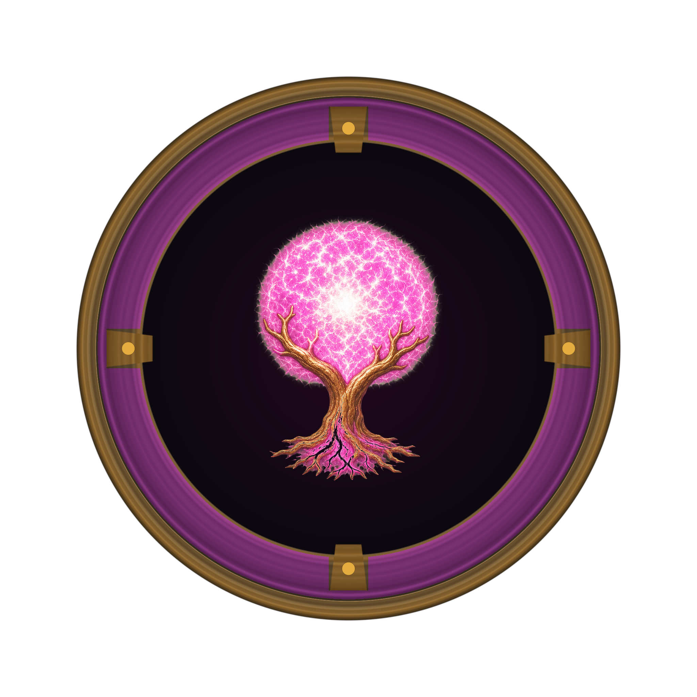
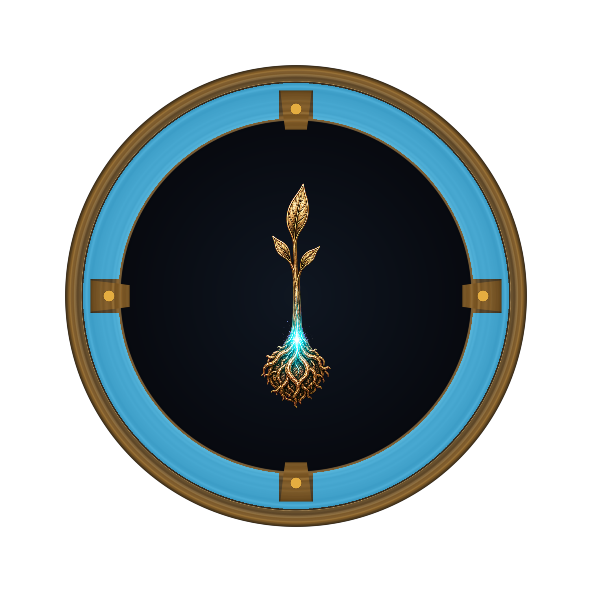
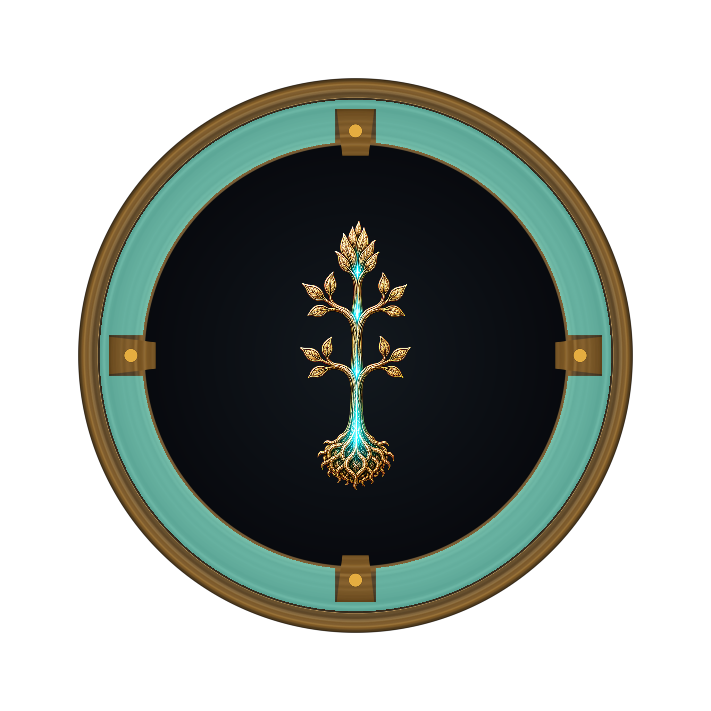
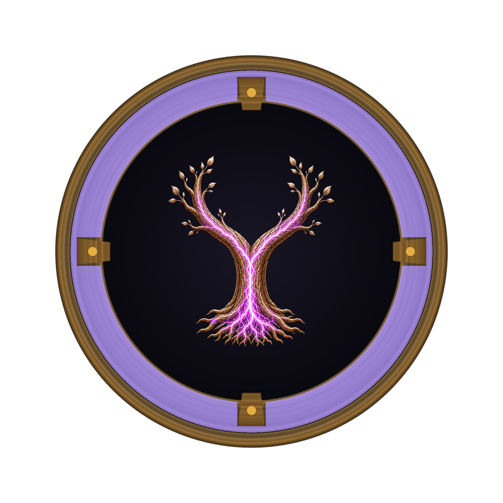
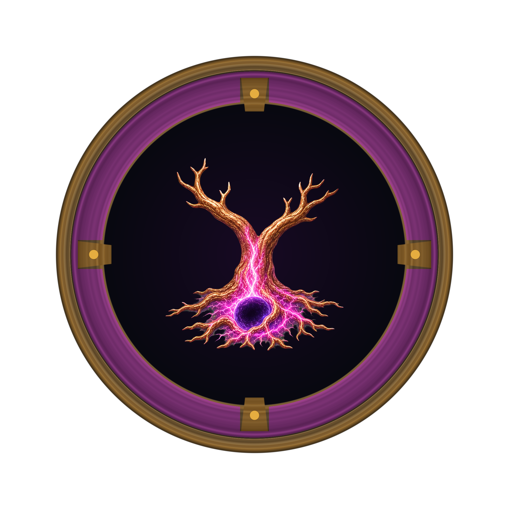
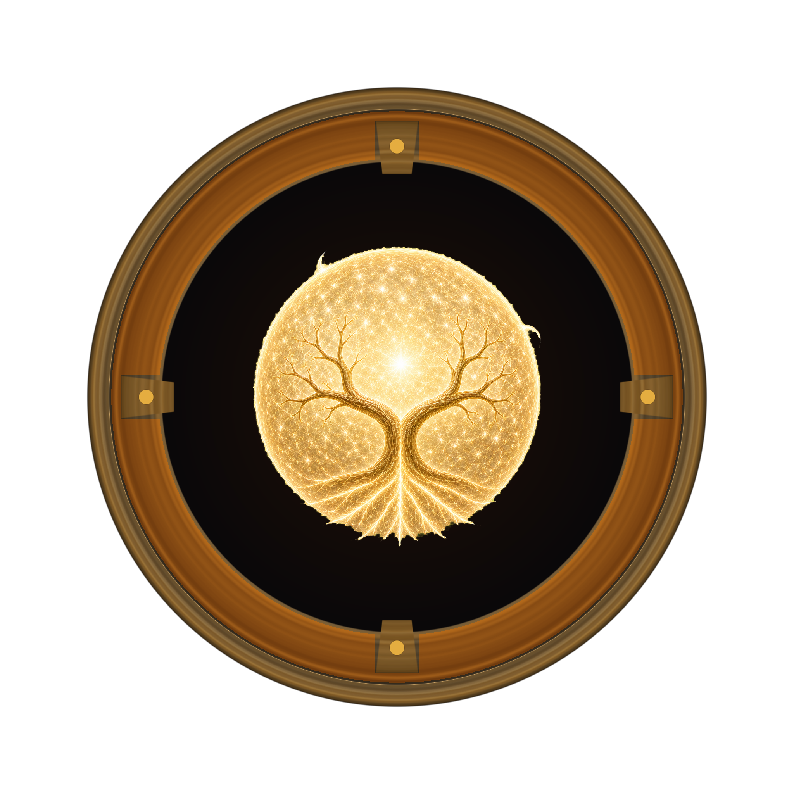
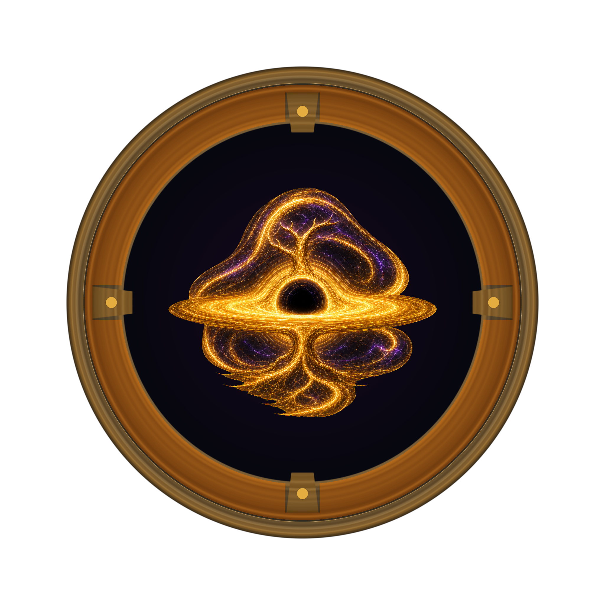
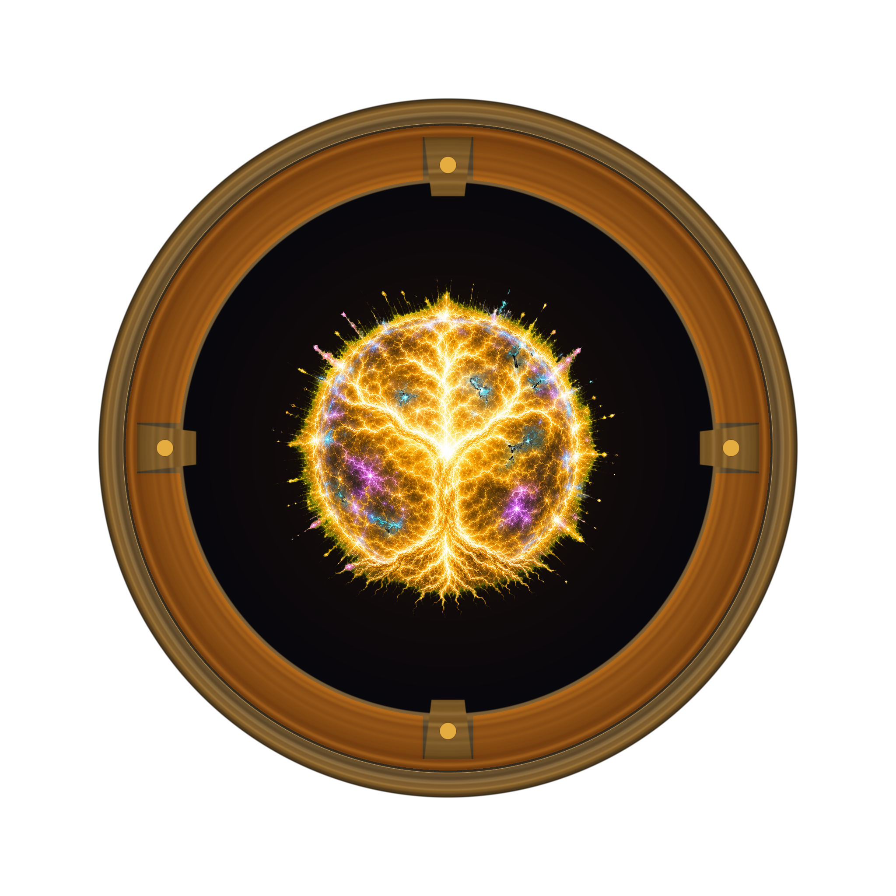
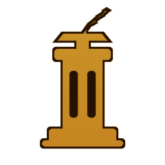

Suite branch · ceremonial
Extra
The Suite rank is earned. The reinforced seal is set.
Evidence-backed agent capabilities
See what agents can do, who proved it first, and the evidence behind every claim.
curl -fsSL https://gaiaskilltree.com/install.sh | sh
Registry honors
The highest-ranked named implementations in the registry, kept on the public record.
The highest-ranked named implementations in the registry, by level.
curl -fsSL https://gaiaskilltree.com/install.sh | shiex (irm https://gaiaskilltree.com/install.ps1)pipx install gaia-cliRun three commands yourself.
gaia init --yespy -m gaia_cli init --yesgaia init --yesgaia scanpy -m gaia_cli scangaia scangaia pushpy -m gaia_cli pushgaia pushclaude mcp add gaia -- npx @gaia-registry/mcp@0.1.0
npx @gaia-registry/mcp@0.1.0. Endpoint: research.gaiaskilltree.com/mcp. See packages/mcp for config-file examples.gaiapy -m gaia_cligaiaYour agent handles the mechanics and asks before submitting.
Work in my current repository and register it with Gaia. The Gaia CLI operates inside the target repository. If a target URL is provided and it is not already available locally, clone a temporary copy and work there. 1. Read the current instructions at https://github.com/gaia-research/gaia-skill-tree. Install Gaia if missing; if it already exists, upgrade `gaia-cli` with its package manager before continuing. Print `gaia version` and report the install method used. 2. Run `gaia init --yes` inside the target repository. If `.gaia/config.toml` already exists, inspect it first and ask before replacing it; only then use `gaia init --force --yes`. 3. Run `gaia scan`. If scanning fails, stop and show the error rather than continuing with stale state. 4. Run `gaia push --dry-run`. This must only print the proposed batch; do not open an issue or write an Intake submission. 5. Summarise detected skills, proposed evidence, attribution, warnings, and exactly what the real push will submit. 6. Ask: “Submit this Gaia Intake now? [Y/n]” 7. Only after I confirm, run `gaia push --yes` and return the resulting Intake issue or pull-request URL. Never use `git commit` or `git push` on the target repository, and do not edit Registry data by hand. 8. If a temporary clone was used, optionally ask if I want to delete it.
Prepare one standalone skill for Gaia Intake on my behalf. The Gaia CLI operates inside the target repository. If a target URL is provided and it is not already available locally, clone a temporary copy and work there. Use https://github.com/gaia-research/gaia-skill-tree as the source of truth and follow `.github/ISSUE_TEMPLATE/new_skill_intake.yml` exactly. 1. Determine my authenticated GitHub username with `gh api user --jq .login` and show it to me. 2. Clarify the skill name, falsifiable capability, source repository, and any evidence I provide. 3. Check the existing Registry for overlap before proposing a new kebab-case ID. 4. Curate real, resolvable evidence. Include my supplied evidence, preserve its source, use GitHub `blob/` links rather than `tree/`, and never invent metrics or claims. 5. Treat this as `self-made` and attribute the named submission to my authenticated GitHub username only if the sources confirm I am the Origin Contributor. If they indicate another origin, stop and explain the attribution conflict. 6. Draft the complete Yggdrasil II Intake YAML, including `basic` or `fusion`, prerequisites, attribution, Grade B-or-better evidence, and the optional named block when valid. Validate it against the issue template; if Gaia is installed, also run `gaia push --from-file skills.yml --dry-run` and treat any failure as blocking. 7. Before opening anything, summarise the proposed skill, attribution, evidence, exact issue title, and the validated YAML. Ask: “Open this skill Intake as @<my-handle>? [Y/n]” 8. Only after I confirm, submit through the Skill Intake issue template—or run `gaia push --from-file skills.yml --yes`—and return the issue URL. Never use both routes, never commit or push to the target repository, and do not modify canonical Registry files directly. 9. If a temporary clone was used, optionally ask if I want to delete it.
Always review an agent's proposed plan before giving it permission to push.
Every contribution undergoes rigorous programmatic and contributor checks before merge, ensuring registry integrity. Click "Simulate Review" below to see it in action.
The Ascension Cycle
Rank is earned. Branch is chosen.

Act I · The trunk
A real skill enters the tree. The first seal is set.

Act I · The trunk
Given an identity, a signet, and a place in the atlas.

Act I · The trunk
Reproducible, installable, and traceable to its source.
Act II · The fork
At three stars, every named skill has walked the same trunk. Awakened, Named, Evolved. The fourth star is where the tree forks. A named skill with suiteComponents ascends the Suite branch. A named skill without suiteComponents ascends the Unique branch. The choice is not made at promotion time; it is derived from the named skill's structure at read time. Read the derivation in the Suite or Unique branch reference in the Codex.
→ Unique

Suite branch · ceremonial
The Suite rank is earned. The reinforced seal is set.

Unique branch · void
The path bends. The standard structural rule does not apply.
→ Unique

Suite branch · ceremonial
The Suite 5★ rank name. Ultimate is the ceiling of the standard promotion path when the branch is Suite.

Unique branch · void
The Unique 5★ rank name. Ultimate is the shared 5★ label across both branches; the Unique prefix marks the branch.
Ultimate is a rank, not a class. Every 5★ skill is Ultimate; the branch prefix tells you which lane it rose through.
→ Unique

Suite terminal · six predicates
The Suite terminal. Six predicates, all required. The Suite Apex Gate is unchanged from Yggdrasil I.
aGradedOriginsGte5Five A-graded originsdirectNestedSuiteGte1One directly nested Suitedepth2OnlyReachableGte1One depth-two-only originoverallGradeSOverall Trust Grade S
sourceTenureDaysGte180AorSA or S source held for 180 daysapexPromotionPrSignedPromotion pull request signedUnique terminal · five predicates
The Unique terminal. Five predicates, provisional. The Unique Impossible Gate is the Suite Apex Gate minus the directNestedSuiteGte1 predicate. Formal ratification pending.
aGradedOriginsGte5Five A-graded originsdepth2OnlyReachableGte1One depth-two-only originoverallGradeSOverall Trust Grade SsourceTenureDaysGte180AorSA or S source held for 180 daysapexPromotionPrSignedPromotion pull request signedTwo terminals. Two gates. Both are Apex-grade trust, earned through opposite structural paths.
A skill earns its Overall Trust Grade by the strength of the evidence behind it. Four tiers (Bronze, Silver, Gold, Platinum) mark the aggregate Trust Magnitude that a skill's evidence pool reaches.
Each piece of evidence (a repo, a benchmark, a peer-reviewed paper) earns its own per-row Evidence Grade. The numbers above are the aggregate Trust Magnitude thresholds the rows must combine to clear. See the methodology report for the full formula.
Recent registry curation, schema migrations, and audit passes.
This skill has no named implementation yet. Be the first to claim it — build a real implementation, submit it for review, and your name goes on the canonical registry forever.